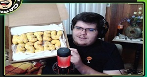

Jornalista, humorista, streamer e influenciador digital, esse é Cazé! Iniciou sua carreira há muitos anos junto ao seu amigo Pedro Certezas com o canal De Sola, que mistura humor e futebol. Hoje, trabalha na televisão no canal SBT e também faz parte do grupo TNT Sports. Além disso, produz suas próprias lives quase que diariamente.
O Fênomeno Casimiro.
Em meio à pandemia, Casimiro viu as portas do sucesso abrirem para si. Muitas pessoas apenas o conheceram pelas lives, aumentando muito sua popularidade (principalmente no meio futebolístico). Sua repercursão na internet foi tanta que ele chegou até mesmo a furar a bolha do futebol e dos jovens (visto que a maioria das pessoas que assistem lives são adolescentes).
Os Bordões

Uma das coisas que o popularizou por toda a internet foram seus icônicos bordões, sendo um dos mais famosos o "Meteu Essa?". Mas ele também possui diversas outras falas famosas e muito engraçadas, como por exempolo: "Que papinho", "Isso me pega muito", entre outros. Com tantas frases muito boas, sua legião de fãs começou a espalhar para todos os nichos da internet, praticamente nacionalizando o streamer.